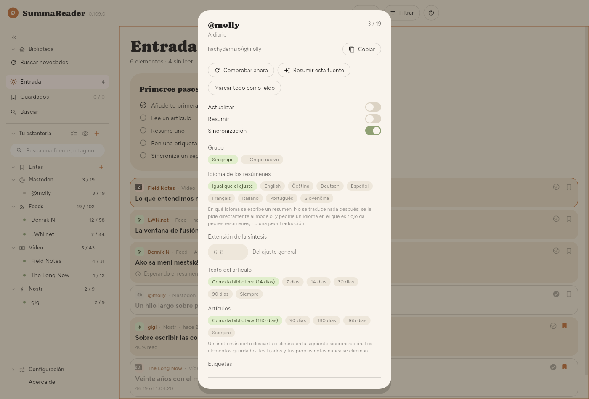
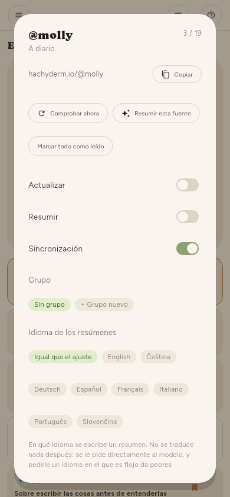

← Guardar cosas · Contenido · Sincronización →
Gestionar las fuentes
Un feed
El engranaje de una fila de la estantería (que aparece con Seleccionar varias o con una pulsación larga), o el engranaje junto al nombre de la fuente en un artículo abierto, abre ese feed:


| Comprobar ahora | Consulta este feed |
| Resumir este canal | Todo lo suyo que espera un resumen |
| Marcar todo como leído | Todo lo suyo |
| Actualizar | Si las comprobaciones lo incluyen |
| Resumir | Si las comprobaciones lo resumen |
| Sincronización | Si sus artículos viajan a tus otros dispositivos |
| Grupo, Idioma de los resúmenes | Dónde está en la estantería, y su propio idioma de resumen |
| Volver a leer los artículos | Vuelve a descargar el texto que falló |
| Resumir de nuevo | Descarta sus resúmenes y los rehace |
| Quitar | Pregunta antes y dice lo que cuesta |
Resumir de nuevo es lo que hay que usar después de cambiar el idioma de los resúmenes o el modelo: un artículo que ya tiene resumen no se rehace de ninguna otra forma.
Muchos feeds
Configuración › Básico › Fuentes › Fuentes tiene los mismos controles sobre toda la lista, con un filtro y una casilla de selección, así que «todos los canales de YouTube que importé la semana pasada» es una sola acción y no trescientas.